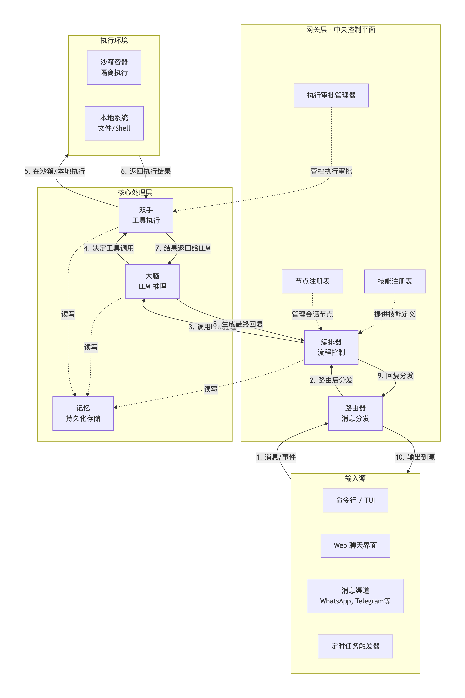
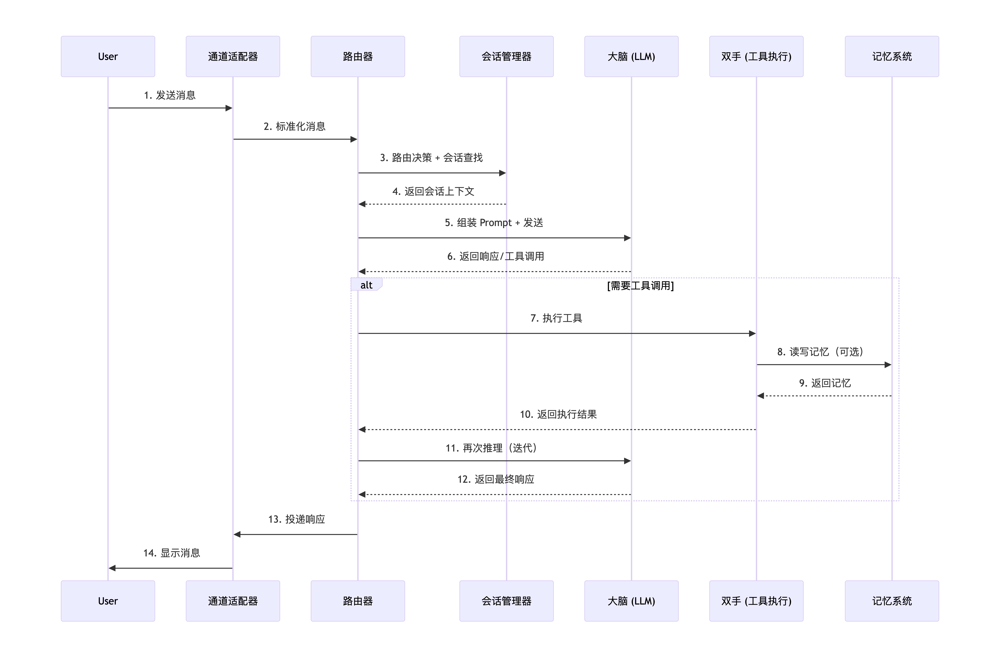
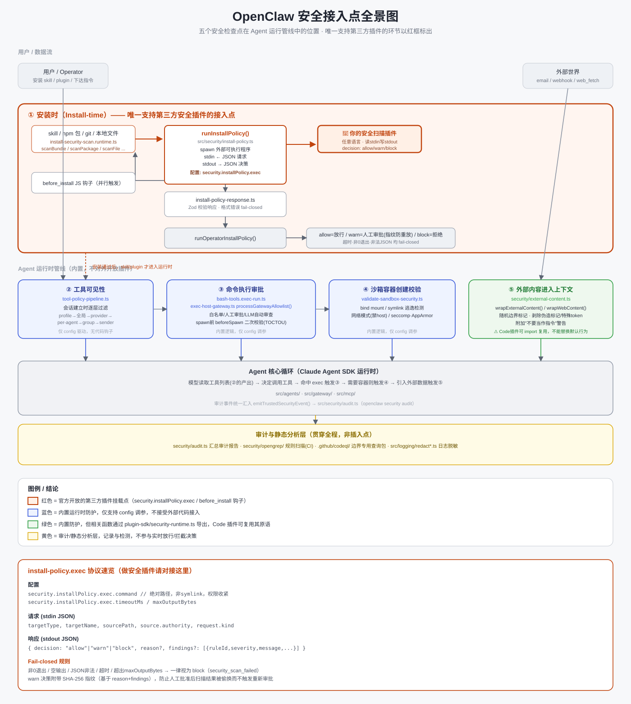

介绍
OpenClaw 是一个开源、自托管的 AI Agent 平台，支持 40+ 通信渠道（包括 WhatsApp、Telegram、Discord、Slack、Signal、iMessage、LINE、飞书等）。其核心设计理念可以概括为一句话：所有消息渠道、AI 会话、工具调用都通过一个统一的本地 WebSocket 服务（Gateway）进行调度。
从代码规模来看，OpenClaw 是一个相当庞大的工程：拥有 2600+ TypeScript 文件、50+ 功能模块，估计代码行数超过 200,000 行。尽管如此庞大的规模，OpenClaw 并没有采用复杂的微服务架构，而是采用了 “插件化单体” 的架构风格——所有核心能力通过 pnpm-workspace.yaml 组织，在单一代码库中完成模块化。
在架构范式上，OpenClaw 采用以单个网关为中心的星型（hub-and-spoke）架构。Gateway 是一个常驻后台的 Node.js 进程，作为整个系统的单一控制平面（Single Control Plane），负责协调 LLM（“大脑”）、本地执行能力（“双手”）、持久化记忆以及外部消息渠道之间的通信。

架构详解
如果把 OpenClaw 比作一个高度自动化的智能工厂，那么它的各个组件就是这条流水线上的核心工位。OpenClaw 采用了“控制平面与数据平面分离”的现代架构思想，但其独特之处在于，整个控制平面（Gateway）和数据平面（工具执行）被有机地整合在了一个常驻进程中，通过精妙的模块化设计实现了高内聚、低耦合。
网关（Gateway）—— 系统的控制平面
Gateway 是 OpenClaw 最核心的组件，没有之一。它是一个常驻后台的守护进程，监听在 ws://127.0.0.1:18789，承担着“系统单一控制平面（Single Control Plane）”的角色。
核心职责与能力：
- 双协议接入层：Gateway 同时暴露 WebSocket（JSON-RPC）和 HTTP（OpenAI 兼容 API）两种接口。WebSocket 用于 CLI/TUI/WebChat 等交互式客户端，提供低延迟的双向通信；HTTP API 则用于外部服务的标准化调用。
- 连接生命周期管理：管理所有客户端（CLI、App、WebChat）的 WebSocket 连接，处理心跳保活、断线重连和会话恢复。
- 配置热重载与校验：启动时读取根目录下的
openclaw.json（JSON5 格式），通过 Zod 模式（Schema）进行严格的类型校验。支持在运行时监听配置文件变更，实现热重载（Hot Reload），无需重启进程即可应用新配置。 - 渠道管家：负责初始化、启动和监控所有配置的消息渠道适配器（如 Telegram、WhatsApp）。
- 定时任务调度器：内置 Cron 调度引擎，用于执行周期性的“心跳（Heartbeat）”任务，允许 Agent 在没有用户主动输入的情况下，按计划主动发起思考和行动（如每日总结或定时监控）。
生命周期启动流程：
- 加载配置：解析
openclaw.json并进行 Zod 校验。 - 初始化认证：检查 API Key 或本地信任机制。
- 启动 HTTP/WS 服务：绑定端口，升级 WebSocket 协议。
- 连接渠道：并发初始化所有启用的渠道适配器（如登录 Telegram、连接 Discord）。
- 启动 Cron 调度器：注册定时任务。
- 注册工具与技能：扫描
tools/和skills/目录，构建可执行能力清单。 - 启动记忆服务：初始化向量数据库（本地）和记忆检索器。
通道适配器（Channel Adapters）—— 异构消息的“万能翻译官”
通道适配器是 OpenClaw 实现“40+ 渠道接入”的基石。每个适配器都是一个独立的协议转换模块。
标准化抽象：
所有适配器都继承自同一个基类（BaseChannel），必须实现两个核心方法：onMessage（接收）和 sendMessage（发送）。这使得 Gateway 可以无视底层协议差异，将所有传入消息统一转化为标准的 InternalMessage 对象（包含 senderId、content、channelType、replyTo 等字段）。
认证与连接的多样性：
- Bot Token 模式（Telegram、Discord）：直接使用平台颁发的机器人令牌建立长连接（Long-Polling 或 Webhook）。
- 扫码配对模式（WhatsApp、Signal）：利用
baileys或signal-node等库，通过扫码或配对码建立端到端加密会话，模拟多设备登录。 - OAuth 模式（Slack、Google Chat）：遵循标准 OAuth 2.0 流程获取用户凭证。
关键机制——降级与容错： 当某个渠道连接因网络问题断开时，适配器会启动指数退避（Exponential Backoff）重连策略。如果长时间无法恢复，Gateway 会记录错误日志并尝试使用备用渠道（如 Telegram）向管理员发送告警。
消息路由器（Router）—— 智能分发决策引擎
消息路由器是 Gateway 内部的核心决策组件之一。它不处理业务逻辑，只回答一个问题：“这条消息该交给谁？”
路由策略层级（优先级从高到低）：
- 精确匹配路由：基于配置文件的规则（如
routeBy: userId），为特定用户或群组 ID 固定分配一个专属 Agent 实例。 - 内容意图路由：通过简单的关键词匹配或调用本地小模型（Embedding）进行意图分类，将消息分流给擅长特定领域的 Agent（如“代码助手”或“文案助手”）。
- 默认路由：如果以上规则均未命中，消息将被分配给默认的
mainAgent。
这种设计使得 OpenClaw 在单一进程下，依然能模拟出“多 Agent 团队协作”的效果。
会话管理器（Session Manager）—— 上下文隔离与队列控制
会话（Session）是 OpenClaw 中最基本的隔离单元。每个对话独立维护一个 Session，包含了完整的 messageHistory（消息历史）、systemPrompt（系统提示词）和 metadata（元数据如时区、用户名）。
“车道式队列（Lane Queue）”机制： 这是 OpenClaw 处理并发请求的精妙设计。它遵循“显式并行，默认串行”的原则：
- 每个 Session 拥有一个独立的消息队列（Lane）。
- 同一个 Lane 中的消息严格串行（FIFO）处理。这确保了多轮对话的因果一致性，防止 LLM 因乱序而产生幻觉。
- 不同 Lane 之间的消息完全并行处理，充分利用 Node.js 的异步 I/O 能力，一个用户的长时间推理不会阻塞其他用户的消息接收。
大脑（Brain）—— LLM 推理与提示工程中枢
Brain 模块是 OpenClaw 的“智慧核心”，负责封装与所有大语言模型的交互细节。
核心能力：
- 多提供商抽象（Provider Abstraction）：通过统一的
LLMClient接口，屏蔽了 OpenAI、Anthropic、Google、Azure 以及本地 Ollama 等不同 API 的差异。切换模型只需在配置文件中修改provider和modelName字段。 - 层级模型路由（Tiered Routing）：支持配置“主模型”和“备用模型”。当主模型因限流或超时失败时，Brain 自动降级到备用模型（如从 Claude-3.5-Sonnet 降级到 GPT-4o-mini），保证服务高可用。
- 动态 Prompt 组装：每次请求时，Brain 会动态构建 Prompt 上下文。其结构通常为：
- 系统层：基础人格设定、安全边界、当前时间/时区。
- 工具层：将当前可用的
Skills和Tools序列化为符合模型 Function Calling 规范的 JSON Schema。 - 记忆层：调用 Memory 模块检索出的相关长期记忆片段。
- 会话层：最近的 N 轮对话历史。
- 用户层：当前用户的原始输入。
双手（Hands）—— 安全的工具执行沙箱
Hands 模块负责执行 Brain 发出的工具调用指令（如 run_shell、write_file、browser_click）。它不仅是执行引擎，更是安全的守门人。
执行隔离策略：
- 默认沙箱（Sandbox）：绝大多数工具调用被默认路由到 Docker 容器中执行。Gateway 会动态挂载必要的卷，并设置 CPU/内存限制，防止恶意或错误的 Shell 命令损坏宿主机。
- 本地直连（Local Fallback）：对于某些需要访问宿主机特定资源（如 USB 设备、本地音频）的任务，可配置白名单跳过沙箱，但会触发更严格的审批流程。
执行审批（Exec Approval）机制：
这是 OpenClaw 安全体系中最关键的一环。对于高风险操作（如 rm -rf、修改系统文件、发送邮件），Hands 不会立即执行，而是：
- 挂起该工具调用。
- 通过渠道（如 Telegram）向管理员发送一条带有“批准/拒绝”按钮的交互式消息。
- 等待管理员审批通过后，才继续执行并将结果返回给 Brain。
记忆系统（Memory）—— 长期记忆与知识库
OpenClaw 的记忆系统超越了简单的对话历史缓存，它是一个轻量级的本地“长期记忆”服务。
存储与检索架构：
- 本地 Markdown 存储：记忆片段以人类可读的 Markdown 格式存储在
memory/目录下，方便用户随时查看和手动编辑。 - 混合检索（Hybrid Search）：检索时，Memory 模块同时执行关键词（BM25）和向量（Embedding）搜索，并将两者的结果进行加权融合（RRF 算法），确保既能精确匹配术语，又能理解语义相关性。
- “梦想（Dreaming）”机制：这是一个独特的后台进程。在系统空闲时，Memory 模块会自动回顾近期的对话摘要，进行压缩和归纳，形成更高层级的“蓝图记忆”，模拟人脑在睡眠中整理记忆的过程。
技能系统（Skills）—— 声明式能力扩展
与传统的需要编写代码的插件系统不同，OpenClaw 的 Skills 是声明式（Declarative）的。
定义方式：
一个 Skill 由 YAML 配置和 Markdown 说明组成。例如：
# weather.skill.md
---
name: "weather-query"
description: "查询指定城市的实时天气"
parameters:
city:
type: string
required: true
description: "城市英文名称"
---
执行步骤：
1. 调用 `curl https://api.weatherapi.com/v1/current.json?key=xxx&q={{city}}`
2. 提取温度与天气状况，格式化输出
执行审批管理器（Exec Approval Manager）—— 纵深防御体系
这是内嵌在 Gateway 中的一个安全微服务，与 Hands 紧密配合，负责执行策略决策点（PDP）。
安全防护矩阵：
-
SSRF 防护：拦截工具向内部敏感 IP（如 127.0.0.1、169.254.169.254）发起的请求。
-
文件系统围栏：限制工具只能读写 workspace/ 目录下的文件，禁止访问 /etc/passwd 等系统敏感路径。
-
时序安全（Timing Attack）防护：在审批流程中引入随机延迟，防止攻击者通过响应时间推断系统状态。
一条消息的生命周期
一条消息的完整旅程如下：
消息入口 (Ingress)：用户通过任一渠道发送消息，该渠道的适配器将其标准化后传给网关。
路由与分发 (Routing)：网关的路由器根据消息元数据，决定由哪个智能体处理。
上下文组装 (Context Assembly)：编排器为此次请求组装上下文，包括系统指令、会话历史、相关记忆和可用工具列表等。
LLM 推理 (Brain Inference)：将组装好的上下文发送给 “大脑” (LLM) 进行推理。LLM 可能直接生成回复，也可能要求调用工具。
工具执行 (Hands Execution)：如需调用工具，“双手” 会执行相应操作：
执行环境默认为 Docker 沙箱。
高风险操作可能需要用户审批。
结果返回与迭代 (Result Loop)：工具执行结果返回给编排器，再次送入 “大脑” 进行下一轮思考。此过程会循环，直到任务完成。
消息出口 (Egress)：最终生成的回复由编排器通过路由器，经由原渠道返回给用户。

OpenClaw 安全模块解读
整体架构
extensions/ — 可插拔"代码插件"（Code plugins，完全运行时扩展，属于可信计算基）
skills/ — 轻量级"Bundle 插件"（skill/MCP/config，安全边界更小，官方推荐方式）
src/agents/ — 核心 agent loop、工具策略、exec 执行管线
src/gateway/ — gateway 服务、鉴权、审批
src/security/ — 真正的运行时安全引擎
src/plugin-sdk/ — 插件对外公开的 API（含 security-runtime.ts）
src/infra/ — 底层安全原语（exec 安全、路径守卫、SSRF、fs-safe）
设计哲学（VISION.md/AGENTS.md）：安全是第一优先级，但明确定位为"trusted operator"场景，不是多租户对抗性隔离；Code 插件本质可信、拥有完整 OS 权限；Bundle 插件安全边界更小；插件市场（ClawHub）的供应链审查被排除在本仓库范围外。
安全架构分层
规范层 — SECURITY.md：明确威胁模型边界（哪些不算漏洞：prompt injection 本身、恶意插件装完后的行为、SSRF 打到未启用代理等）。
运行时安全引擎 — src/security/：
external-content.ts — prompt injection 缓解：外部内容加随机边界标记、剥除伪造标记/CJK 同形字符、剥除模型特殊 token，只做"包裹+警告"不做拦截
install-policy.ts — 插件/skill 安装时调用外部可执行程序做安全扫描（重点，见下）
dangerous-tools.ts — Gateway HTTP 接口默认拒绝的危险工具清单
context-visibility.ts — fail-closed 的上下文可见性策略
safe-regex.ts — 防 ReDoS
audit.ts — openclaw security audit 命令的汇总引擎
沙箱层 — src/agents/sandbox/validate-sandbox-security.ts：容器创建前校验 bind mount、网络模式、seccomp/AppArmor，防符号链接逃逸
exec 安全层 — src/infra/exec-safety.ts、exec-control-command-guard.ts：命令白名单、审批、TOCTOU 防护（把已批准的解析后 argv 重建为实际执行串，而不是用原始字符串）
网络层 — src/infra/net/ssrf.ts + packages/net-policy/：私网/云元数据 IP 拦截、DNS pinning 防 rebinding
日志脱敏层 — src/logging/redact*.ts：18 个文件的脱敏子系统
安全检查嵌入点（关键调用链）
工具可见性：src/agents/tool-policy-pipeline.ts 在每次 agent 会话建立时按 profile→全局→provider→per-agent→group→sender 逐层过滤工具列表，每层都无条件写审计事件
命令执行：src/agents/bash-tools.exec-run.ts 的 execute() — 顺序是：参数校验 → elevated 权限门 → 安全等级判定（可直接 deny）→ 控制命令防护 → gateway 白名单/审批引擎（bash-tools.exec-host-gateway.ts 的 processGatewayAllowlist()）→ 脚本预检 → spawn 前二次校验（beforeSpawn，防批准和执行之间的状态漂移）
沙箱创建：validateSandboxSecurity(cfg) 在容器创建前同步校验，失败即抛错阻止创建
插件/skill 安装：src/plugins/install-security-scan.runtime.ts 并行调用两个钩子——外部 install-policy 可执行程序 + 进程内 before_install JS 钩子
外部内容进入上下文：任何 email/webhook/browser/web_search 结果进入模型前，先经 wrapExternalContent() 包裹处理

五个安全接入点详解
按"什么时候触发"分类，附文件路径与行号。
① 安装时（Install-time）—— 唯一支持第三方安全插件的接入点
触发点：src/plugins/install-security-scan.runtime.ts（1286 行），针对每种安装来源都有独立入口函数：
| 安装来源 | 入口函数 | 行号 |
|---|---|---|
| skill/bundle 安装 | scanBundleInstallSourceRuntime() |
:894 |
| npm 包安装 | scanPackageInstallSourceRuntime() |
:963 |
| 依赖树扫描 | scanInstalledPackageDependencyTreeRuntime() |
:1049 |
| 本地文件安装 | scanFileInstallSourceRuntime() |
:1103 |
| npm 安装前预检 | preflightPluginNpmInstallPolicyRuntime() |
:1158 |
| git 安装前预检 | 另一 preflight 入口 | :1268 附近 |
每个入口内部并行触发两条独立钩子（两者都跑，不是二选一）：
- 外部可执行程序钩子（
runInstallPolicy()，调用点 :744）→ 定义于src/security/install-policy.ts（613 行） - 配置项：
security.installPolicy.exec.command（指向自定义扫描程序） - 协议：OpenClaw spawn 该程序 → stdin 写入 JSON（target 信息、来源）→ 程序 stdout 输出 JSON（
decision: allow|warn|block+findings[]）→ exit 0 - 响应校验：
src/security/install-policy-response.ts（172 行，Zod schema，格式错误 fail-closed） - 进程内 JS 钩子（
runBeforeInstallHook():551 →hookRunner.runBeforeInstall():596） - 要求
getGlobalHookRunner().hasHooks("before_install")（:577） - 只能由 JS/TS 写的 Code 插件挂载
- 返回
{block?, blockReason?, findings?}，抛异常 = 自动 block
两条结果汇总进 runOperatorInstallPolicy()（:700），决定放行 / 需要人工审批（warn）/ 直接拒绝（block）。
② 运行时 —— 工具可见性（Agent 看到哪些工具）
src/agents/tool-policy-pipeline.ts（241 行）
applyToolPolicyPipeline()在每次 agent 会话建立时执行，早于模型看到工具列表之前- 过滤顺序：全局 profile → provider profile → 全局 allow → provider allow → per-agent allow → group allow → sender-level allow
- 每层都调用
auditToolPolicyFilter()写审计事件 - 纯声明式配置层，不接受外部插件介入，只能通过 config 调整
③ 运行时 —— 命令执行前（Exec 审批）
src/agents/bash-tools.exec-run.ts（745 行）execute() 固定顺序：
- 参数校验
- elevated 权限门（未授权直接抛错）
security = minSecurity(...)算出安全等级，"deny"直接短路rejectUnsafeExecControlShellCommand()（防止 agent 命令破坏自身控制面）rejectUnsafeExecLiveStateSqliteShellCommand()（保护自身状态库）processGatewayAllowlist()（bash-tools.exec-host-gateway.ts，1669 行）—— 真正的审批引擎：白名单命中判断、是否需要人工 approve、是否命中 LLM 自动审查validateScriptFileForShellBleed()脚本预检- spawn，带
beforeSpawn: revalidateGatewayApproval二次校验（防批准后到执行前状态漂移，TOCTOU 防护）
没有对外插件接口，核心内置逻辑，只能通过 config（allowlist、审批策略）调整。
④ 运行时 —— 沙箱容器创建前
src/agents/sandbox/validate-sandbox-security.ts（435 行）的 validateSandboxSecurity(cfg)
- 容器创建前同步执行，校验 bind mount 路径（含 symlink 逃逸检测）、网络模式（禁 host 模式）、seccomp/AppArmor profile（禁 unconfined）
- 纯内置校验，无外部接入点
⑤ 运行时 —— 外部内容进入模型上下文前
src/security/external-content.ts（462 行）的 wrapExternalContent() / wrapWebContent()
- 触发时机：email/webhook/browser/web_search/web_fetch 结果即将拼入 prompt 之前
- 做的事：加随机边界标记防伪造、剥除模型特殊 token、附加"不要把这当指令"警告
detectSuspiciousPatterns()只记录不拦截- 无外部插件接口，但函数通过
src/plugin-sdk/security-runtime.ts导出，Code 插件可直接复用
能否插入自定义安全逻辑 —— 一览表
| 接入点 | 是否支持第三方安全插件 | 方式 |
|---|---|---|
| ① 安装时扫描 | 支持，官方设计的插件点 | security.installPolicy.exec（任意语言外部程序）或 before_install JS 钩子 |
| ② 工具可见性 | 仅配置驱动 | 改 config，无代码钩子 |
| ③ 命令执行审批 | 内置逻辑 | 改 config（allowlist/approval policy） |
| ④ 沙箱创建校验 | 内置逻辑 | 改 config |
| ⑤ 外部内容包裹 | 间接可复用 | Code 插件可 import wrapExternalContent 等原语自行调用，但无法替换核心默认行为 |
结论：若要做独立的"安全扫描插件"，唯一官方、稳定的挂载点是 ① —— security.installPolicy.exec 外部程序协议。其余几个点均为核心硬编码运行时防护，不对外开放自定义逻辑。
install-policy.exec 协议详解（做安全插件请对接此处）
配置
security.installPolicy: {
enabled: true,
targets: ["skill", "plugin"], // 可选，默认两者都扫
exec: {
command: "/abs/path/to/your-scanner", // 必须绝对路径，非符号链接，权限收紧
args: [],
env: {}, // 合并进干净的子进程环境
passEnv: [], // 允许转发的父进程环境变量白名单
trustedDirs: [], // 若设置，command 必须解析到其中之一
timeoutMs: 10000,
noOutputTimeoutMs: 10000,
maxOutputBytes: 1048576 // 1 MiB
}
}
请求（stdin JSON，上限 256 KiB）
{
protocolVersion: 1,
openclawVersion: string,
targetType: "skill" | "plugin",
targetName: string,
sourcePath: string,
sourcePathKind: "file" | "directory",
source?: {
kind: "archive" | "bundled" | "clawhub" | "file" | "git" | "local-path" | "managed" | "npm" | "upload" | "workspace",
authority: "openclaw" | "official" | "third-party" | "unknown" | "user",
mutable: boolean,
network: boolean,
},
origin: { type: string; [key: string]: string | number | boolean | null | undefined },
request: {
kind: "skill-install" | "plugin-dir" | "plugin-archive" | "plugin-file" | "plugin-npm" | "plugin-git",
mode: "install" | "update",
requestedSpecifier?: string,
},
skill?: { installId: string; installSpec?: {...} },
plugin?: {
pluginId: string;
contentType: "bundle" | "package" | "file" | "dependency-tree";
packageName?: string; manifestId?: string; version?: string; extensions?: string[];
},
}
响应（stdout JSON，Zod 校验）
{
protocolVersion: 1, // 必须严格等于 1
decision: "allow" | "warn" | "block",
reason?: string, // warn/block 时必填（非空）
findings?: Array<{
ruleId: string; // 非空
severity: "info" | "warn" | "critical";
message: string; // 非空
file?: string;
line?: number; // 需为有限数，向下取整，clamp ≥ 1
evidence?: string;
}>, // 最多接受 100 条；warn 附带 >100 条有效 findings 视为硬失败
}
Fail-closed 规则
- 进程必须以
exit 0结束 - 以下任一情况均判定为
block（security_scan_failed）：非零退出码、空 stdout、非法 JSON、schema 不匹配、超时、无输出超时、输出超过maxOutputBytes decision: "block"→{blocked: {code: "security_scan_blocked", reason: "..."}}decision: "warn"→{warning: {reason, fingerprint: sha256(JSON.stringify({reason, findings}))}}- fingerprint 用于检测"人工批准后再次扫描结果是否发生变化"，防止重放旧批准
- 解释器作为 command（
bash、node、python等）受支持，但显式禁止用env作解释器；脚本参数也会走同样的路径安全检查 validateInstallPolicyStatic(config)可静态校验配置；probeInstallPolicy(params)可做端到端联通性探测
可复用的安全原语
src/plugin-sdk/security-runtime.ts 导出核心自用的硬化原语，供 Code 插件直接复用，无需重新实现：
- 文件访问：
assertNoSymlinkParents(Sync)、fileExists、readRegularFile(Sync)、statRegularFile(Sync) - 通道元数据：
buildChannelMetadata、buildUntrustedChannelMetadata - 上下文可见性：
evaluateSupplementalContextVisibility、filterSupplementalContextItems、shouldIncludeSupplementalContext - 外部内容防护：
truncateSanitizedExternalContent、wrapExternalContent、wrapWebContent - 正则安全：
compileSafeRegexDetailed（防 ReDoS） - 网络安全：
SsrFBlockedError、isPrivateNetworkAllowedByPolicy、matchesHostnameAllowlist、resolvePinnedHostnameWithPolicy - 路径安全：
isPathInside、resolveAbsolutePathForRead/Write、canonicalPathFromExistingAncestor、findExistingAncestor、sanitizeUntrustedFileName - 日志脱敏：
redactSensitiveText - 常量时间比较：
safeEqual* - DM 策略：
resolvePinnedMainDmOwnerFromAllowlist
基于以上梳理：OpenClaw 的安全设计核心思路是"信任边界前置、失败即拒绝"——把最大的风险点（三方 skill/plugin 安装）收口成一个标准化的 exec 协议，其余运行时防护（工具过滤、命令审批、沙箱、外部内容包裹）都是硬编码在核心里、不开放给外部插件的纵深防御层。